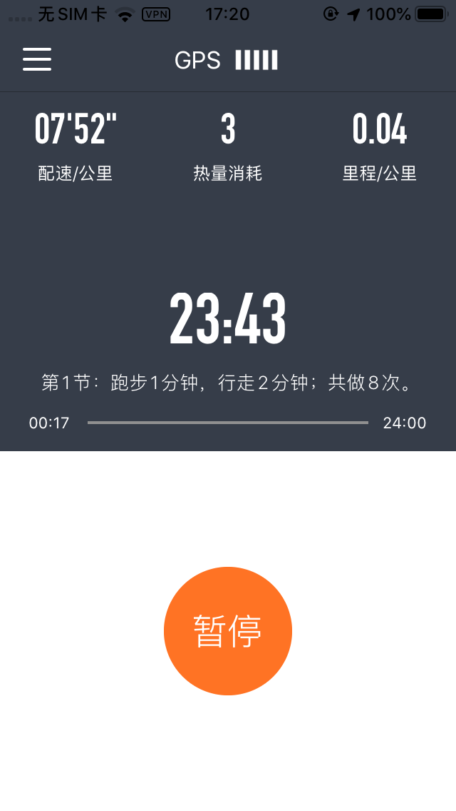
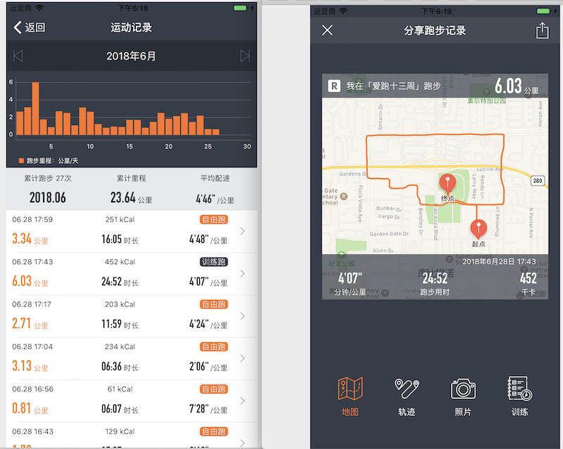

《爱上跑步的13周》提供了完整的13周跑步训练计划。该计划核心在于循序渐进地提升运动量，在避免运动受伤的前提下，用13周让几乎任何体能状况的人完成自己的10公里跑。
心动不如行动。
但实际行动起来，却发现要完全跟随计划有点困难，因为这套训练计划的核心是跑步与走路相结合。我们需要知道什么时候该跑步，什么时候该走路。
《爱跑十三周》这个工具型app就是为此而生。
- 下载地址：https://itunes.apple.com/cn/app/id1403686503
- 或苹果商店搜索「爱跑十三周」下载。
《爱跑十三周》的主要功能如下：
一、内置完整13周训练计划
《爱跑十三周》100%还原《爱上跑步的13周》中制定的训练计划，包括中后期的「跑步多一些」和「走路多一些」选项，也都可以在《爱跑十三周》中进行设定。除了基础计划，还包括进阶的13周维持计划和13周快跑计划，完全还原原书计划。

二、后台语音提示，践行计划无压力
根据训练计划，在跑步与走路需要切换时，会有语音提示。再也不用担心跟不上计划了。
同时，每满1公里，还会有语音提示。即使熄灭手机跑步，一样可以在切换跑步走路时进行语音提示。
三、实时GPS数据，一目了然
基于GPS，可以实时看到自己跑步的速度、距离、卡路里。跑完，还可以看到自己跑步的路线。
四、详细运动记录，方便回顾
每次运动，这款专属《爱上跑步的13周》的工具软件都会记录详细的跑步数据以及跑步路线。
五、跑步提醒，规律运动
每隔2天，系统会提醒你该进行下一次训练了。就是这样。
如果你想践行《爱上跑步的13周》跑步计划，这就是你最佳的工具软件App。
下载地址
最后，再发一次下载地址，仅支持苹果手机哦！
- 下载地址：https://itunes.apple.com/cn/app/id1403686503
- 或苹果商店搜索「爱跑十三周」下载。